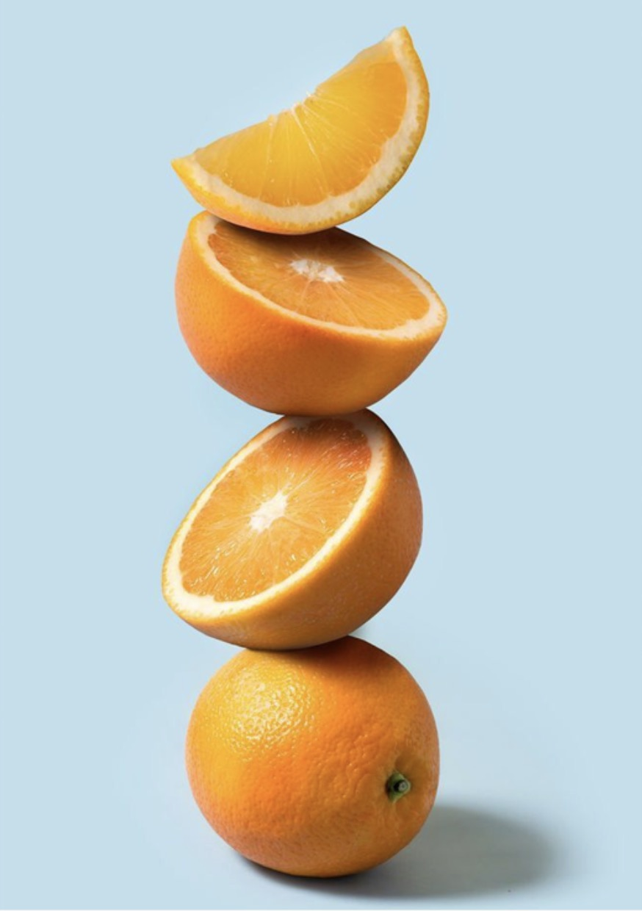
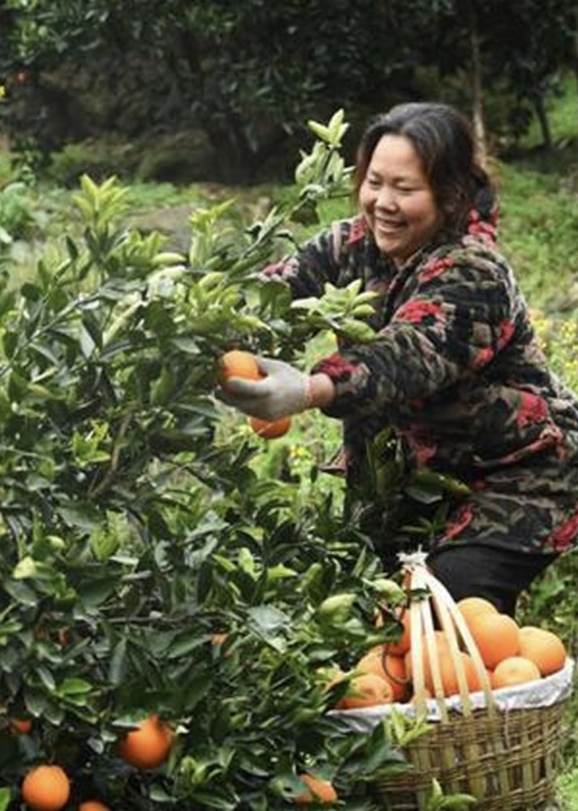

橙香扑鼻、酸甜多汁、新鲜细嫩。
秭归伦晚脐橙
￥38.90
在春花烂漫里和你相遇、 新鲜采摘、原产地直发、不打蜡、不催熟、不染色.优质的土壤、雪峰山脉和凉山山脉相夹形成了独特小气候,每年的7-10月，昼夜温差接近10度，有利于光合产物的积累,造就了秭归伦晚脐橙:解渴、味浓、甜!

遇到你之前，
我积攒了大半年的阳光雨露，
在这冬日里滋润你温暖你……

卖家服务
“优鲜赔”：生鲜商品如出现破损或腐坏等问题，请在商品签收后48小时内提交“优鲜赔”申请，如客户提交申请时间在商家工作时间内（工作日：9:00-18:00，不包括周六日、春节假期及十一假期），商家100分钟内审核通过后即享补偿，无需返回商品；非鲜活易腐类产品除外，需上门取件。
关于发货
因生鲜水果的特殊性，所有商品7天内完成发货(预售商品以预售时间为准)。如果您是急单请先联系在线客服，拍下视同认可本店发货时间。